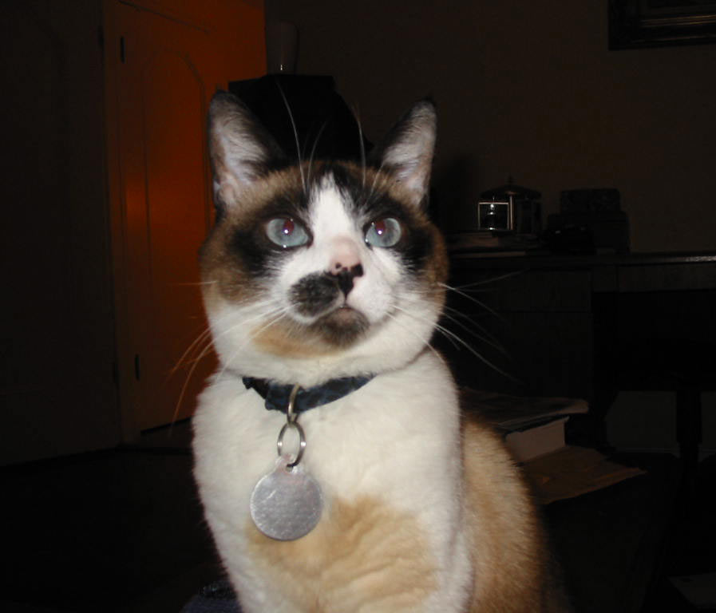

The Snowshoe is a rare breed of cat originating in the United States of America in the 1960s. Snowshoes were first produced in Philadelphia when a Siamese breeder's cat gave birth to three kittens with white feet. The breeder, Dorothy Hinds-Daugherty, then began a breeding program to produce what were originally called "Silver Laces",[1] crossing the strangely marked Siamese cats with bi-color American Shorthair cats and other breeds. When Hinds-Daugherty left the program, Vikki Olander began working with the cats and recruited new breeders, as well as worked towards full recognition within cat associations. Despite having existed for 45 years, Snowshoes are rare due to the difficulty of reproducing the correct coat markings. The marks are based on recessive genes for color points and on the co-dominant but variably-expressed piebald pattern gene, making it difficult to predict the appearance of offspring.
The coat coloration recognized by registries and associations is point coloration, and it comes in a variety of colors, though some organizations do not recognize certain colors. Snowshoe cats have an affectionate and docile disposition. Due to this, they do not do well under circumstances where they are left alone for long periods of time. Snowshoes are also very vocal, though their voices are not as loud as the Siamese, a cat found in their breed heritage. They are noted as being very intelligent and have the ability to learn tricks and open doors. These cats also enjoy water, and may swim.
References:
This article uses material from the Wikipedia article ”Snowshoe cat", which is released under the Creative Commons Attribution-Share-Alike License 3.0.
Picture: By CaTigeReptile (Picture of my cat, Lily Ringo) [Public domain], via Wikimedia Commons